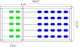
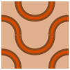

Read and use mathematical models in a technical document
This section covers the following mathematical concepts.
Identify shapes and apply their properties (skill)
This section presents geometric properties, illustrates identifying shapes in applications, and illustrates breaking down complex shapes into simple ones.
Subsection4.1.1Formulae
This section defines the two properties of interest and provides the formulae for some common shapes. Memorizing all of the formulae is not likely useful: in a job you will be able to look them up. However, anything you use a lot (e.g., triangles) is worth memorizing.
Two of the properties of shapes we will consider are perimeter and area. The perimeter of a shape is a measure of the size of its border (edges). The area of a shape is a measure of what it takes to fill the shape. In the figure below showing the outline of Kapi’olani Regional Park the perimeter is the distance someone would travel walking around the edge of the park. The area determines how much grass seed it would take to spread over the park.
Figure4.1.1.Complex Shape with Perimeter and Area
Definition4.1.2.Parallelogram.
A parallelogram is a four sided shape for which opposing pairs of sides are parallel.
Parallelograms include rectangles, which are parallelograms with four right angles, and rhombi, which are parallelograms with four equal length sides. Notice that a square is a rectangle and a rhombus.
Table4.1.3.Parallelograms
Shape
Perimeter
Area
\(2(a+b)\)
\(h_1 a\)
The perimeter formula is the sum of the four sides. Because the sides come in two pairs which each have the same length we end up with \(a+b+a+b = a+a+b+b = 2a+2b = 2(a+b)\text{.}\) This means the 2 is an exact number.
Example4.1.4.
What are the perimeter and area of this parallelogram?
The perimeter is the sum of the side lengths which in this case is
Significant digits rounding is used, because side lengths are measurements.
Checkpoint4.1.6.
Definition4.1.7.Trapezoid.
A trapezoid is a four sided shape for which one pair of opposing sides are parallel.
Table4.1.8.Trapezoid
Shape
Perimeter
Area
\(a_1+b_1+a_2+b_2\)
\(\frac{h}{2}(a_1+a_2)\)
Because none of the side lengths need be the same, the perimeter “formula” is just the sum of the four sides. The height must be between the two, parallel sides. The formula does not work if a line is connected between the other two sides.
Example4.1.9.
What are the perimeter and area of this trapezoid?
The perimeter of this trapezoid is the sum of the four side lengths
Because the three sides can all be different, the perimeter formula is just the sum of the lengths of each side. The height is a segment from a vertex down (perpendicularly) to the opposite side. Any vertex/side pair can be used. Be aware that the height may not intersect the opposite side; consider Figure 4.1.15. The vertical, dashed line segments are heights for those two triangles. The one on the left is from the top vertex down to the bottom side. The one on the right is from the top vertex down to the extension (to the left) of the bottom side. The \(1/2\) in the area formula is an exact number.
Example4.1.14.
What are the perimeter and area of the triangles in Figure 4.1.15?
In Table 4.1.13 the height is labeled \(h\text{.}\) Draw the other two heights.
Theorem4.1.18.Pythagorean Theorem.
For a triangle containing a right angle
\begin{equation*}
a^2+b^2=c^2
\end{equation*}
where \(a\) and \(b\) are the lengths of the sides adjacent to the right angle and \(c\) is the third side.
Example4.1.19.
Consider the triangle in Figure 4.1.15.(b). Consider the segments of length 4.43, 5.98, and the horizontal dashed segment. If we want to know the length of the dashed segment, we can use this theorem. 5.98 is the length of the side not adjacent to (opposite from) the right angle (\(c\) in the formula).
We use significant figures rounding because side lengths are measurements.
Example4.1.20.
Another use of this theorem is determining if a triangle is a right triangle. Notice that the triangle in Figure 4.1.15.(a) appears to have a right angle at the top (opposite the side of length 10.90). If this is a right triangle, then \(a^2+b^2\) will equal \(c^2\text{.}\)
Because \(10.1 \ne 10.9\) this is not a right triangle, but it appears to be close.
Checkpoint4.1.21.
In Section 7.3 we will develop a version of this statement for triangles without a right angle.
The formula for area of a triangle above requires that we be able to calculate the height. In Section 7.1 we will learn to calculate this height if we know an angle. This next formula enables us to calculate the area of a triangle without knowing any angles or the height.
Theorem4.1.22.Heron’s Formula.
The area of a triangle can be calculated using the three sides.
\begin{equation*}
A = \sqrt{s(s-a)(s-b)(s-c)}
\end{equation*}
where \(s=\frac{1}{2}(a+b+c)\text{.}\)
The \(1/2\) in Heron’s formula is an exact number.
Example4.1.23.
Calculate the area of the triangles in Figure 4.1.15.
\begin{align*}
s & = \frac{1}{2}(5.98+8.19+2.87) \text{ Each term precise to 100ths}\\
& \approx 8.52. \text{ Sum maintains to the 100ths}\\
\text{Area} & \approx \sqrt{8.52(8.52-5.98)(8.52-8.19)(8.52-2.87)} \text{ Sums maintain to the 100ths}\\
& \approx \sqrt{8.52(2.54)(0.33)(5.65)} \text{ Smallest factor has 2 sigfigs}\\
& \approx \sqrt{40.34927160} \text{ Root maintains 2 sigfigs}\\
& \approx 6.35210765\\
& \approx 6.4.
\end{align*}
We use significant digits rounding because the side lengths are measurements.
Notice that the results from Heron’s formula are slightly different from the results using the \(\frac{1}{2}bh\) formula. This reminds us that different calculations can result in different rounding. If the difference does not impact the application we do not care. If it does have a negative impact, then we must measure more precisely.
Checkpoint4.1.24.
Table4.1.25.Circle
Shape
Perimeter
Area
\(2\pi r\)
\(\pi r^2\)
\(\pi d\)
\(\pi \frac{d^2}{4}\)
The 2 and 4 in the formulae are exact numbers. When performing calculations with \(\pi\) we will need to select an appropriate approximation. Because it is possible to obtain an approximation with arbitrary precision (as many decimal places as we want), we will select the approximation so that rounding is not affected.
Example4.1.26.
For a circle with radius 7.31 what are the perimeter and area?
The perimeter, given in Table 4.1.25, is \(2\pi r\text{.}\) For radius 7.31
What are the perimeter and area of a semi-circle with diameter 11.7?
The perimeter includes half the usual perimeter plus the length of the diameter. We use the diameter version of the perimeter formula: \(\pi d\text{.}\)
When we encounter geometric questions, they will often involve shapes consisting of more than one basic shape such as the park boundry above. Our first task then is to break down these shapes into pieces that are basic shapes (ones we already know). Then we can use the geometric properties to calculate results.
Note that often we can break down a complex shape in more than one way. Which way we choose will depend on what we are trying to calculate and what information we have available.
Example4.1.29.
(a)
Find the area of this wall given the dimensions given in feet.
First we notice that we can describe the wall as a rectangle with a triangle on top of it.
The sides of the rectangular area are 7.0 ft (height) and 24.0 ft (width). This means that area is \(7.0 \text{ ft} \cdot 24.0 \text{ ft} = 168 \text{ ft}^2\text{.}\)
The top is a triangle with two sides of length 13.0 and one of length 24.0. We don’t know the height of the triangle so it will be easier to use Heron’s formula for area.
The total area then is \(168+6\bar{0} = 228 \approx 230\) square feet.
(b)
Find the perimeter of this wall given the dimensions given in feet.
There are five (5) edges. There sum is \(7.0+24.0+7.0+13.0+13.0=64.0\) feet.
(c)
What is the (tallest) height of the wall?
The height comes from the center of the wall (peak of the triangle). The height of the wall is the height of the rectangle (7.0 ft) plus the height of the triangle. We must calculate the height of the triangle. At this time we know the area and two area formulae. Height is part of the first area formula, and from Heron’s formula we already know the area. Putting these two together gives us the following.
Calculate the square footage of the combined living room and hallway.
This layout is rectangular. The living room is a rectange with height 12 ft 10 in and width 15 ft 7 in. The hallway adds an additional rectangle of height 3 ft 1 in and width 11 ft 1 in.
To calculate square footage we need to convert everything to the same unit. To avoid rounding issues we will convert to inches then back to feet in the end.
The living room height is \(12 \text{ ft} \cdot \frac{1 \text{ ft}}{12 \text{ in}} + 10 \text{ in} = 154 \text{ in}\text{.}\) The width is \(15 \text{ ft} \cdot \frac{1 \text{ ft}}{12 \text{ in}} + 7 \text{ in} = 187 \text{ in}\text{.}\) The area is \((154 \text{ in})(187 \text{ in}) = 28798 \text{ in}^2\text{.}\)
The hallway height is \(3 \text{ ft} \cdot \frac{1 \text{ ft}}{12 \text{ in}} + 1 \text{ in} = 37 \text{ in}\text{.}\) The width is \(11 \text{ ft} \cdot \frac{1 \text{ ft}}{12 \text{ in}} + 1 \text{ in} = 122 \text{ in}\text{.}\) The area is \((37 \text{ in})(122 \text{ in}) = 4514 \text{ in}^2\text{.}\)
The total floor surface is \(28798 \text{ in}^2+4514 \text{ in}^2=33312 \text{ in}^2\text{.}\) We can now convert that back to feet.
We use significant digits rounding because these are measurements. All measurements were accurate to one inch. If we converted to decimal feet we would end up with measurements like \(3 \text{ ft} 1 \text{in} \approx 3.0833 \text{ ft}\text{.}\) The repeated decimal would have to be rounded whereas the inch measurement did not need to be rounded. This is why it was easier to convert to inches than to decimal feet.
The following example requires geometric thinking, but does not require any formulae. Especially important is the type of rounding which is determined by physical constraints.
Example4.1.31.
Katie is building a large scale abacus for a park. Her plan is to build it from treated 2x4 lumber. Her plan is shown in Figure 4.1.32 Note the depth of each piece of wood is 3.5". If you are wondering why a 2x4 is 1.5 in x 3.5 in, note that the nominal size (2x4 in this case) is based on the initial cut. The lumber shrinks as it cures and again when it is planed smooth.
Because we must have enough wood, we will round up all approximations. Measurements are accurate to an 8th of an inch.
(a)
What is the total number of feet of lumber (2x4) needed?
Solution.
There are two boards of length 60.0 inches and three boards of length 27.0 inches. The total length is
If a standard 2x4 is 96.0 inches long, what is the smallest number of boards Katie can purchase to have enough lumber?
Solution.
If a 60.0 inch section is cut from a 96.0 inch board, we have \(96.0\text{ in}-60.0\text{ in}=36.0\text{ in}\) left. This is long enough for one of the 27.0 inch segments but not more. Thus two boards will cover all but the last 27.0 inch segment. We need 3, 96.0 inch boards.
(c)
If the boards are painted before they are assembled, what is the total surface area of the boards to be painted? Paint cans are rated for the number of square feet they can cover. We will want the solution in units of square feet.
Solution.
Each board has six surface. Each surface size appears twice (e.g., top and bottom). For the long segments these areas are
We would need paint to cover 15 square feet to have at least enough.
(d)
What is the area that is hidden, that is, cannot be seen after assembling?
Solution.
This would be where the three short boards touch the long boards. There are six places where this happens which are all the same shape \(3.5\text{ in} \cdot 1.5\text{ in} \approx 5.3\text{ in}^2\text{.}\) The covered surface is on both the short boards and the matching spot on the long boards, so there are 12 of these surfaces for \(12 \cdot 5.3\text{ in}^2 \approx 64\text{ in}^2\text{.}\)

Figure4.1.32.Abacus
The following example also illustrates rounding according to physical constraints.
Example4.1.33.
We are purchasing carpet squares to carpet a rectangular room that is 15.5 ft by 19.0 ft. These carpet squares are 18 in by 18 in. A box contains 10 squares. How many boxes of carpet squares do we need purchase? This image shows four carpet squares together.

We need to know how many square across and down the room. For the number of squares across we can divide the width of the room (15.5 ft) by the width of a carpet square (18 in). This requires matching units, so \(15.5 \text{ ft} \cdot \frac{12 \text{ in}}{\text{ft}} = 186 \text{ in}\) Thus the number of squares across is \(\frac{186}{18} = 10.333\text{.}\) This means the final square will be a third of a square in width. While it might seem efficient to reuse the rest of that carpet square in the rows above, we cannot because the pattern would not continue correctly. Thus we simply round up to 11 squares across.
Next we calculate the number of squares down. \(19.0 \text{ ft} \cdot \frac{12 \text{ in}}{\text{ft}} = 228 \text{ in}\text{.}\) Thus the number of squares down is \(\frac{228}{18} = 12.666\text{.}\) Again to have enough squares we must round up to 13 squares down.
Thus the total number of carpet squares needed is \(11 \cdot 13 = 143\text{.}\) Because each box has 10 squares each, we need \(\frac{143}{10} = 14.3\) boxes. To have enough we need 15 boxes. In practice we would likely buy at least one extra box in case there are problems.
Example4.1.34.
At first the following might seem to be a reasonable way to solve this problem. First, calculate the total square inches of floor. Using the conversion to inches from above \(186 \cdot 228 = 42408\) square inches of floor.
Next we can divide by the number of square inches each carpet squares covers to count the number of squares. Each square covers \(18^2 = 324\) square inches. Thus we calculate that we need \(\frac{42408}{324} = 130.888\) carpet squares.
This is substantially fewer than the 143 we calculated previously. The reason is this calculation assumes we can use each of the partial squares somewhere else in the room. This is true when the pattern does not need to match, but not in this case.
Now you may understand why such repeating patterns are avoided in most carpets.